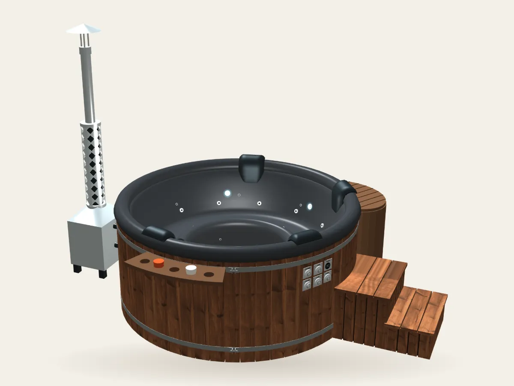
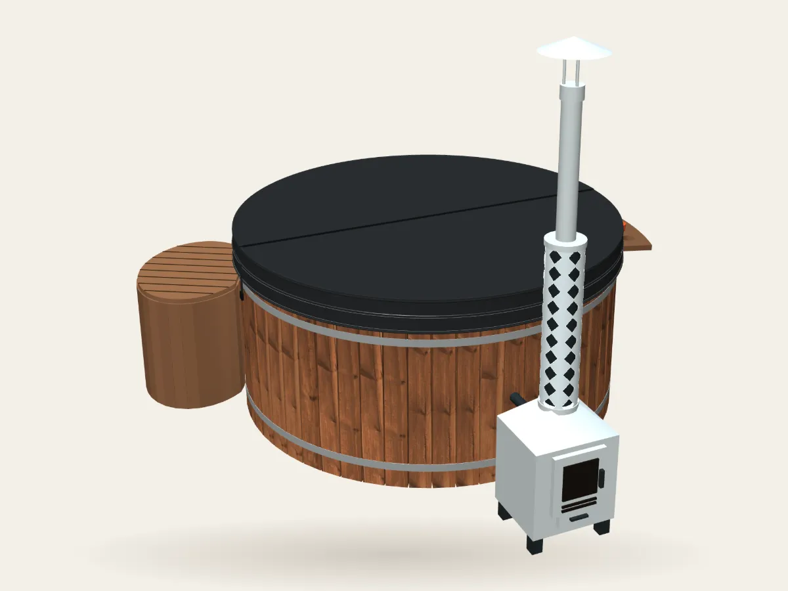

Ausstattung im Überblick
Alle Teile eines Forest-Kings-Badefasses auf einen Blick. Klicken Sie auf eine Nummer im Bild oder in der Liste: Sie sehen, was das Teil ist, was Sie wählen können und wie Sie es nutzen und pflegen.


1Schornstein und Funkenschutz
Der Schornstein leitet den Rauch vom Ofen ab und sorgt für den Zug, den ein sauberes Feuer braucht. Oben ist immer ein Funkenschutz montiert.
Ihre Auswahl
- Funkenschutz: immer montiert; verhindert, dass Funken aus dem Schornstein auf Terrasse oder Garten fallen
- Schornsteinverlängerung +1 m: ein zusätzlicher Meter Schornsteinrohr
- Ein höherer Schornstein zieht stärker – das Feuer lässt sich leichter anzünden, brennt sauberer und der Rauch drückt nicht in den Ofen zurück
- Rauch und Funken treten dann höher aus, weg von den Badenden, der Terrasse und nahen Fenstern oder Dächern
- Die Verlängerung ist sinnvoll, wenn das Badefass nah an einer Wand, Hecke, einem Baum oder Dach steht oder der Platz windig ist, weil die Schornsteinspitze dann über dem Hindernis liegt
Nutzung und Pflege
- Halten Sie den Sicherheitsabstand zu Wänden, Dächern, Bäumen und anderen brennbaren Materialien ein, wie in der Bedienungsanleitung angegeben
- Reinigen Sie Schornstein und Funkenschutz regelmäßig; Ruß verringert den Zug
- Benutzen Sie das Schornsteinrohr nicht als Griff: Es bleibt lange heiß, auch wenn das Feuer schon aus ist
Unsere Empfehlung
Wählen Sie die Verlängerung um 1 m, wenn eine Wand, ein Dach oder ein Baum in der Nähe des Badefasses ist oder der Platz windig ist.
2Schornsteinschutz
Eine Schutzverkleidung um den Schornstein, die Hände und Kleidung vom heißen Rohr fernhält.
Ihre Auswahl
- Schornsteinschutz für den Schornstein des Holzofens
- Beim 9-kW-Elektroheizer nicht nötig: Er hat kein Feuer und keinen Schornstein
Nutzung und Pflege
- Lassen Sie einen brennenden Ofen nie unbeaufsichtigt und halten Sie Kinder von heißen Flächen fern
- Benutzen Sie das Schornsteinrohr nicht als Griff: Es bleibt lange heiß, auch wenn das Feuer schon aus ist
Unsere Empfehlung
Für einen Familiengarten oder eine Holzterrasse empfehlen wir den Schornsteinschutz.
3Holzofen
Ein Holzofen heizt das Wasser – das Badefass funktioniert also ganz ohne Stromanschluss. Sie stellen den Ofen Schritt für Schritt zusammen: Leistung, Edelstahl und Sichtfenster, optional mit Rohrbogen. Statt des Holzofens gibt es auch einen 9-kW-Elektroheizer.
Ihre Auswahl
- Leistung: 20 kW oder 30 kW (heizt ein großes Badefass schneller auf)
- Edelstahl: AISI 304 oder AISI 316 (höhere Korrosionsbeständigkeit)
- Mit Sichtfenster (Sie sehen das Feuer) oder ohne
- Optional ein 90°-Rohrbogen am Schornsteinanschluss
- Position: außen (frei stehend) oder innen, hinter einem Holzschutz
- Elektroheizer 9 kW: kein Feuer und kein Schornstein, braucht einen Stromanschluss
Nutzung und Pflege
- Füllen Sie zuerst Wasser ein, lassen Sie oben 10–15 cm frei, und zünden Sie erst dann den Ofen an; heizen Sie nie, wenn der Wasserstand unter dem Minimum liegt
- Verwenden Sie trockenes Brennholz; feuchtes Holz gibt weniger Wärme und mehr Ruß
- Legen Sie nicht zu viel Brennholz nach, damit das Feuer nicht aus der Tür schlägt
- Lassen Sie einen brennenden Ofen nie unbeaufsichtigt und halten Sie Kinder von heißen Flächen fern
- Entfernen Sie die Asche nur bei kaltem Ofen; lassen Sie den Ofen nach der Nutzung trocknen, damit er nicht rostet
- Lassen Sie das Wasser erst ab, wenn der Ofen vollständig abgekühlt ist
- Bei Minustemperaturen lassen Sie das Wasser nach der Nutzung immer aus dem Ofen ab, sonst platzt der Ofen
- Der Elektroheizer muss von einer Elektrofachkraft nach den örtlichen Vorschriften angeschlossen werden
Unsere Empfehlung
Ein 20-kW-Ofen mit Sichtfenster aus AISI 316. Durch das Sichtfenster können Sie das Feuer beobachten und regulieren, und AISI 316 ist am korrosionsbeständigsten. Wählen Sie 30 kW für das große Badefass oder für häufige Nutzung bei Kälte. Wählen Sie den 9-kW-Elektroheizer, wenn bei Ihnen kein offenes Feuer erlaubt oder gewünscht ist.
4Ofenanschluss
Der Außenofen ist mit Anschlüssen aus Edelstahl und Schläuchen mit dem Badefass verbunden.
Ihre Auswahl
- Ofenanschlüsse aus Edelstahl, in unserer eigenen Werkstatt gefertigt
- Position des Ofens: außen (frei stehend) oder innen, hinter einem Holzschutz
Nutzung und Pflege
- Stellen Sie den Ofen auf einen ebenen, festen Untergrund, die Vorderseite etwas tiefer
- Die Verbindungsschläuche zwischen Badefass und Ofen dürfen nicht nach oben verlaufen, sondern müssen nach unten geführt werden
- Verwenden Sie nur sauberes Wasser: Eisen- und Kalkablagerungen verhindern, dass Schieber und Ventile dicht schließen, und verstopfen die Technik
- Liegt der Eisengehalt des Wassers über 200 µg/l, ist ein Enteisenungsfilter nötig; bei hartem Wasser ein Enthärtungs- bzw. Entkalkungsfilter
5Innenwanne
Die Innenwanne ist die Fläche, auf der Sie sitzen, und der Teil, der das Wasser hält. Es gibt sie aus Gelcoat oder aus Acryl, in drei Farben.
Ihre Auswahl
- Gelcoat: robust und reparierbar
- Acryl: sehr glatt und angenehm auf der Haut
- Farben: Graphit, Mokkabraun, Tiefblau (dieselben drei für Gelcoat und Acryl)
- Ein Badefass mit Acryl-Innenwanne muss unter einem Dach stehen (überdachte Terrasse, Unterstand oder Pavillon); eine Gelcoat-Innenwanne darf auch im Freien stehen
Nutzung und Pflege
- Nur mit klarem Wasser und einem weichen, feuchten Tuch reinigen; keine Reinigungsmittel, Lösungsmittel oder Scheuerschwämme verwenden
- Reste von Sonnencreme, Ölen und Seife regelmäßig abspülen
- Auf dunklen Farben sind Kalkränder besser zu sehen; sie lassen sich leicht entfernen
- Keine Glasgefäße und keine harten oder scharfen Gegenstände im Badefass verwenden und nicht mit Schuhen einsteigen
Unsere Empfehlung
Wählen Sie Acryl, wenn Sie die glatteste, angenehmste und am leichtesten zu reinigende Oberfläche möchten. Gelcoat ist die vernünftige Wahl, wenn Sie den Preis niedrig halten wollen. Graphit verzeiht Schmutz und passt am besten zu dunklem Holz.
6Größe, Form und Sitze
Zwei Größen und zwei Formen, auf Bestellung in unserer eigenen Werkstatt gefertigt. Wählen Sie die Größe danach, wie viele Personen das Badefass meistens nutzen, und nach dem Platz, den Sie für das Badefass und die Treppe haben. Die Sitze sind in die Innenwanne eingeformt.
Ihre Auswahl
- King M: innen 185×85 cm, außen 205×100 cm, 5–6 Personen, ca. 1.100 l Wasser, Aufheizzeit ca. 2,5 Std.
- King L: innen 200×90 cm, außen 225×105 cm, 6–8 Personen, ca. 1.500 l Wasser, Aufheizzeit ca. 3 Std.
- Rund: die klassische Form, alle sitzen sich gegenüber
- Eckig: kompakte Stellfläche, passt in Ecken und auf Terrassen
- Innenform für runde Badefässer: Form 1 (klassische Sitzbank rund um einen Mittelbereich) oder Form 2 (geformte 3D-Innenwanne mit ausgeformten Sitzen)
- In die Sitze können Luftmassage-Düsen eingebaut werden (Punkt 9), darüber am Rand Kopfstützen (Punkt 7)
Nutzung und Pflege
- Planen Sie rund um das Badefass Platz für Ofen, Treppe und Wartung ein
- Sorgen Sie für einen ebenen, tragfähigen Untergrund – ein gefülltes Badefass wiegt deutlich über eine Tonne
- Runde Badefässer kommen frei stehend am besten zur Geltung; eckige passen gut an eine Wand oder einen Zaun (halten Sie die Abstände für Ofen und Schornstein ein)
- Die Form ändert nichts am Heizprinzip, nur an der Wassermenge und an der Anordnung von Sitzen und Zubehör
- Größere Badefässer fassen mehr Wasser und brauchen mehr Brennholz und mehr Zeit zum Aufheizen
- Die Aufheizzeiten sind Richtwerte: Sie hängen von der Ausgangstemperatur des Wassers, dem Wetter, dem Wind und davon ab, ob die Abdeckung geschlossen bleibt
- Setzen Sie sich nicht auf den Rand des Badefasses; empfohlen sind 36–40 °C, überschreiten Sie 40 °C nicht
Unsere Empfehlung
Für eine Familie oder regelmäßigen Besuch von Freunden empfehlen wir King L (6–8 Personen). Für ein Paar oder eine kleine Familie reicht King M – es heizt schneller auf und braucht weniger Brennholz. Wir empfehlen die runde Form: Sie bietet den bequemsten Sitz und die beste Wärmeverteilung. Wählen Sie eckig, wenn das Badefass in eine Ecke oder an eine Wand passen muss.
7Kopfstützen
Weiche Kissen, die über den Rand hängen und Kopf und Nacken beim Entspannen bequem stützen.
Ihre Auswahl
- 1 bis 8 Kopfstützen
- Dunkle Farbe, hängt über den Rand des Badefasses
Nutzung und Pflege
- Nach der Nutzung mit klarem Wasser abspülen und trocknen lassen
- Nehmen Sie die Kopfstützen im Winter ab und lagern Sie sie drinnen
- Nicht als Stufe oder Griff verwenden
Unsere Empfehlung
Ideal ist eine Kopfstütze pro regelmäßig genutztem Sitzplatz; bei einem Familien-Badefass decken 4 Kopfstützen die beliebtesten Plätze ab.
8Hydromassage
Wasserdüsen in der Innenwanne massieren Rücken, Hüften und Füße. Die Düsen werden von einer Pumpe betrieben (Stromanschluss erforderlich).
Ihre Auswahl
- 8 oder 12 Düsen
- Mehr Düsen erreichen mehr vom Körper und massieren kräftiger
- Position der Düsen: Standard (unsere bewährte Anordnung) oder individuell (Sie sagen uns, wo Sie sie haben möchten)
Nutzung und Pflege
- Der Wasserstand muss immer über den Düsen liegen; lassen Sie die Pumpe nie länger als 3 Sekunden ohne Wasser laufen
- Ein- und ausschalten mit den Tasten, die Stärke mit dem Durchflussregler einstellen; stellen Sie den Regler auf MIN, wenn die Massage nicht läuft
- Drehen Sie die Düsen, um Richtung und Stärke des Strahls zu ändern
- Reinigen oder wechseln Sie den Filter regelmäßig, damit die Pumpe leise und effizient bleibt
- Bei Kälte die Massage erst einschalten, wenn sich das Wasser auf +30 °C erwärmt hat
- Nach dem Ablassen die Hydromassage mehrmals für etwa 3 Sekunden einschalten, damit das restliche Wasser aus dem System läuft
- Die elektrischen Teile sind CE-gekennzeichnet; die Installation muss von einer Elektrofachkraft nach den örtlichen Vorschriften erfolgen
Unsere Empfehlung
Für zwei oder drei Personen sind 8 Düsen angenehm; für ein volles Familien-Badefass wählen Sie 12 Düsen. Die Standardposition passt für die meisten; wählen Sie individuell, wenn Sie einen Lieblingsplatz haben oder die Düsen in einer bestimmten Höhe brauchen. Die Hydromassage ist ideal für Rücken und Schultern.
9Luftmassage
Luftblasen werden durch Düsen in den Sitzen ins Wasser geblasen. Das ergibt eine sanfte, sprudelnde Massage, die sich anders anfühlt als die Wasserdüsen.
Ihre Auswahl
- 12 Düsen mit 750 W, in den Sitzen
- 24 Düsen: die 12 in den Sitzen plus 12 in der Rückenlehne
- Position der Düsen: Standard oder individuell
Nutzung und Pflege
- Beginnen Sie mit der niedrigsten Stufe und steigern Sie langsam
- Luft kühlt das Wasser schneller ab; legen Sie die Thermoabdeckung auf, wenn die Luftmassage nicht läuft
- Verwenden Sie in einem Badefass mit Luftmassage keine Seifen oder Badeschaum
- Bei Kälte die Luftmassage erst einschalten, wenn sich das Wasser auf +30 °C erwärmt hat
- Nach dem Ablassen die Luftmassage bis zu 30 Sekunden laufen lassen, damit das restliche Wasser aus dem System läuft
Unsere Empfehlung
Wählen Sie 12 Düsen für ein sanftes Sprudelbad. Nehmen Sie 24 Düsen, wenn die Luftmassage einer der Hauptgründe für Ihr Badefass ist – die Düsen in der Rückenlehne massieren zusätzlich den Rücken.
10LED-RGB-Beleuchtung
Farbige Beleuchtung in der Wannenwand macht das Bad am Abend zum Erlebnis und lässt Treppe und Umgebung besser erkennen.
Ihre Auswahl
- LED-RGB-Beleuchtung: 2, 3 oder 5 Leuchten
- Position der Leuchten: Standard (gleichmäßig rund um das Badefass verteilt, im Konfigurator als Uhrzeiten angezeigt) oder individuell
Nutzung und Pflege
- Ein- und ausschalten mit den Tasten an der Außenwand des Badefasses
- Warme, langsame Farbwechsel zum Entspannen, helleres Weiß zum Reinigen und Kontrollieren
- Schalten Sie das Licht aus, wenn das Badefass nicht genutzt wird
- Öffnen oder reparieren Sie die Beleuchtung nicht selbst; wenden Sie sich an uns
Unsere Empfehlung
3 RGB-Leuchten für ein volles, gleichmäßiges Licht, 5 beim großen Badefass.
11LED-Mini-Beleuchtung
Kleine LED-Leuchten für ein sanftes Akzentlicht – eine eigene Option, allein oder zusätzlich zu den RGB-Leuchten.
Ihre Auswahl
- 10 oder 20 kleine LED-Leuchten
- Allein oder zusammen mit der LED-RGB-Beleuchtung
Nutzung und Pflege
- Ein- und ausschalten mit den Tasten an der Außenwand des Badefasses
- Schalten Sie das Licht aus, wenn das Badefass nicht genutzt wird
- Öffnen oder reparieren Sie die Beleuchtung nicht selbst; wenden Sie sich an uns
Unsere Empfehlung
LED-Mini reicht, wenn Sie nur ein sanftes Akzentlicht möchten.
12Getränkeablage
Eine Ablage am Rand hält Getränk, Handy oder Handtuch in Reichweite.
Ihre Auswahl
- Ablage aus Holz (passend zur Verkleidung)
- Ablage aus Metall (dunkel, leicht abzuwischen)
Nutzung und Pflege
- Verwenden Sie am Badefass nur bruchsichere Becher
- Belasten Sie die Ablage nicht mit schweren Gegenständen
- Wischen Sie die Holzablage trocken und ölen Sie sie zusammen mit der Verkleidung
Unsere Empfehlung
Wählen Sie die Holzablage für einen natürlichen Look zur Holzverkleidung oder die Metallablage, wenn Sie sie möglichst leicht reinigen möchten. Für zwei bis vier Personen reicht meist eine Ablage.
13Bedientasten
Mit den Drucktasten an der Außenwand des Badefasses schalten Sie Hydromassage, Luftmassage und LED-Beleuchtung ein und aus.
Ihre Auswahl
- Tastenfeld aus Edelstahl an der Wand des Badefasses
- Position: Sie wählen, wo am Badefass das Tastenfeld sitzt
- Die Anzeige des integrierten Thermometers sitzt im selben Feld (Punkt 14)
Nutzung und Pflege
- Die Stärke der Massage stellen Sie mit einem Regler ein; stellen Sie ihn auf MIN, wenn die Massage nicht läuft, sonst lässt er Wasser durch
- Schließen Sie das Badefass direkt an einen Leitungsschutzschalter an und verwenden Sie zusätzlich einen Fehlerstromschutzschalter (FI)
- Achten Sie darauf, dass die Anlage geerdet ist
14Wasserthermometer
Kennen Sie die Wassertemperatur, bevor Sie einsteigen.
Ihre Auswahl
- Integriertes elektronisches Thermometer: eine kleine Anzeige an der Außenwand
Nutzung und Pflege
- Empfohlen sind 36–40 °C; überschreiten Sie 40 °C nicht
- Prüfen Sie die Anzeige, bevor Sie einsteigen, und noch einmal, während der Ofen brennt
- Am Ofen ist das Wasser wärmer: Rühren Sie das Wasser um, bevor Sie sich auf die Anzeige verlassen
Unsere Empfehlung
Wir empfehlen das integrierte elektronische Thermometer: immer gut sichtbar, und nichts schwimmt im Wasser.
15Steuerung (WLAN)
Steuern Sie Ihr Badefass mit dem Handy: Funktionen prüfen und einstellen, ohne zum Badefass zu gehen.
Ihre Auswahl
- Funktionen per WLAN ein- und ausschalten
- Überwachung von überall in Ihrem Heimnetz
Nutzung und Pflege
- Stellen Sie das Badefass in Reichweite des WLANs auf oder verwenden Sie einen Repeater
- Verwenden Sie ein starkes Passwort für die Verbindung
- Die Fernsteuerung dient nur dem Komfort: Zünden Sie den Ofen nie an und lassen Sie das Badefass nie heizen, ohne dass jemand in der Nähe ist
Unsere Empfehlung
Nehmen Sie die WLAN-Steuerung, wenn Sie das Badefass vom Haus oder von der Arbeit aus prüfen und einstellen möchten. Wenn Sie es nur gelegentlich nutzen und immer in der Nähe sind, können Sie darauf verzichten.
16Treppe
Eine Holztreppe macht das Ein- und Aussteigen sicher. Eine geschlossene Treppe gehört zu jedem Badefass, und Sie wählen, wo sie am Badefass steht.
Ihre Auswahl
- Geschlossene Treppe: mit geschlossenen Seiten
- Individuelle Anfertigung: Treppe nach Ihren Maßen oder Ihrem Entwurf
- Position: Wählen Sie die Uhrzeit-Position rund um das Badefass, damit die Treppe nicht mit dem Ofen oder anderen Teilen kollidiert
- Der Holzton passt zur Verkleidung
Nutzung und Pflege
- Stellen Sie die Treppe auf einen festen, ebenen Untergrund, damit sie nicht wackelt
- Nasses Holz kann rutschig sein: Algen und Laub abbürsten
- Behandeln Sie das Holz ein- bis zweimal im Jahr mit Öl
Unsere Empfehlung
Die geschlossene Treppe passt in die meisten Gärten. Wählen Sie eine individuelle Anfertigung, wenn der Untergrund uneben ist, das Badefass an einer Terrassenkante steht oder Sie eine besondere Höhe oder Breite brauchen.
17Verkleidung
Die Außenverkleidung bestimmt den Look des Badefasses. Wählen Sie echtes Thermoholz oder pflegeleichtes WPC, in acht Farbtönen.
Ihre Auswahl
- Thermoholz oder WPC
- Fichte, Thermoholz, Lärche, Kiefer natur, Rotzeder, Walnuss, Grau lasiert und Schwarz gebeizt
Nutzung und Pflege
- Holz ist ein Naturmaterial: Die Farbe verändert sich mit der Zeit, besonders in direkter Sonne
- Bei Feuchtigkeit dehnt sich Holz aus, beim Trocknen schrumpft es: Stellen Sie das Badefass an einen trockenen, gut belüfteten Platz; ein Dach oder Unterstand ist immer empfehlenswert
- Ölen oder behandeln Sie die Holzverkleidung ein- bis zweimal im Jahr, damit die Farbe erhalten bleibt und das Holz vor Feuchtigkeit geschützt ist
- WPC braucht wenig Pflege: einfach mit Wasser und einer weichen Bürste reinigen
Unsere Empfehlung
Für eine lange Lebensdauer mit wenig Aufwand wählen Sie Thermoholz oder WPC. Thermoholz wirkt natürlich und braucht einmal im Jahr Öl; WPC ist das Richtige, wenn Sie sich um nichts kümmern möchten.
18Gestell und Edelstahlreifen
Das Gestell ist die tragende Konstruktion unter der Verkleidung: Es hält die Innenwanne in Form und trägt Ofen, Treppe und Zubehör.
Ihre Auswahl
- In unserer eigenen Werkstatt auf Bestellung gefertigt
- Ofenanschlüsse aus Edelstahl und eine äußere Holzkonstruktion
- Edelstahlreifen halten die Verkleidung zusammen
Nutzung und Pflege
- Stellen Sie das Badefass auf einen ebenen, waagerechten und festen Untergrund (Betonplatte, verdichteter Schotter mit Pflaster oder eine für die Last gebaute Terrasse)
- Sorgen Sie für einen guten Wasserabfluss, damit sich unter dem Badefass kein Wasser sammelt
- Prüfen Sie Reifen und Schrauben einmal pro Saison
Unsere Empfehlung
Geben Sie dem Badefass einen ebenen, festen Untergrund aus Beton oder Pflaster und halten Sie den Bereich darunter trocken. Ein guter Untergrund schützt das Gestell mehr als alles andere.
19Thermoabdeckung
Ein isolierter Deckel, der die Wärme im Wasser hält, Laub und Schmutz fernhält und das Wasser zwischen den Bädern schützt.
Ihre Auswahl
- Thermoabdeckung in drei Farben: Schwarz, Braun, Grau
- In der Mitte faltbar, damit sie sich leicht öffnen lässt
- Isoliert, damit zwischen den Bädern weniger Wärme verloren geht
Nutzung und Pflege
- Lassen Sie die Abdeckung geschlossen, wenn das Badefass nicht genutzt wird, und immer, während der Ofen heizt
- Setzen oder stellen Sie sich nicht auf die Abdeckung und halten Sie Kinder und Haustiere davon fern
- Schnee, Regen und Laub abkehren; die Unterseite ab und zu trocken wischen
Unsere Empfehlung
Wir empfehlen die Thermoabdeckung für jedes Badefass: Sie verringert Wärmeverluste, verkürzt die Aufheizzeit, spart Brennholz und hält das Wasser sauber. Wählen Sie eine Farbe, die zur Verkleidung passt.
20Ofentür mit Sichtfenster
Durch das Sichtfenster können Sie das Feuer beobachten und regulieren.
Ihre Auswahl
- Ofen mit Sichtfenster (Sie sehen das Feuer) oder ohne
- Kombiniert mit der Leistung und dem Edelstahl, die Sie für den Ofen wählen (Punkt 3)
Nutzung und Pflege
- Den Zug regeln Sie mit der Lüftungsklappe an der Ofentür oder mit dem Aschekasten
- Legen Sie nicht zu viel Brennholz nach, damit das Feuer nicht aus der Tür schlägt
- Beim ersten und zweiten Heizen kann sich im Brennraum Kondenswasser bilden; ab dem dritten Heizen tritt es nicht mehr auf
- Entfernen Sie die Asche nur bei kaltem Ofen; lassen Sie den Ofen nach der Nutzung trocknen, damit er nicht rostet
21Filteranlage
Eine Filteranlage hält das Wasser zwischen den Wasserwechseln klar. Sie können eine kompakte Filterbox oder einen Sandfilter wählen.
Ihre Auswahl
- Filterbox: ein Holzschrank neben dem Badefass, eckig oder rund, passend zur Form des Badefasses
- Sandfilter: ein stärkeres System für größere Wassermengen
- Filteranschluss: nur der Anschluss im Badefass, wenn Sie später einen eigenen Filter anschließen möchten
Nutzung und Pflege
- Reinigen oder rückspülen Sie den Filter regelmäßig, wie in der Bedienungsanleitung beschrieben
- Verwenden Sie nur sauberes Wasser ohne Chemikalien oder Salze: kein Chlor, kein Badeschaum und keine anderen Zusätze
- Entleeren Sie Badefass und Filteranlage im Winter, wenn das Badefass nicht beheizt wird, um Frostschäden zu vermeiden
- Wechseln Sie das Wasser auch mit Filter je nach Nutzung alle paar Wochen
Unsere Empfehlung
Wählen Sie die Filterbox bei regelmäßiger Nutzung: Sie hält das Wasser klar und erspart häufige Wasserwechsel. Nehmen Sie die runde Box zum runden Badefass, damit sie bündig anliegt. Wählen Sie einen Sandfilter bei intensiver Nutzung und größeren Gruppen.
22Elektroheizung 3 kW
Eine kompakte 3-kW-Elektroheizung, die das Wasser mit Strom erwärmt, ganz ohne Feuer. Sie braucht einen Stromanschluss.
Ihre Auswahl
- Elektroheizung, 3 kW
- Kann zu einem Badefass mit Holzofen hinzugefügt werden
Nutzung und Pflege
- Die Heizung muss von einer Elektrofachkraft nach den örtlichen Vorschriften angeschlossen werden
- Schalten Sie die Heizung nie ein, wenn der Wasserstand unter dem Minimum liegt
- Lassen Sie beim Heizen die Thermoabdeckung geschlossen, um Energie zu sparen
- 3 kW heizen langsam; zünden Sie den Ofen an, wenn das Wasser schnell heiß sein soll
Unsere Empfehlung
Nehmen Sie die 3-kW-Elektroheizung, wenn Sie das Wasser zwischen den Bädern warm halten oder die Temperatur ohne Ofen nachheizen möchten. Zusammen mit der WLAN-Steuerung können Sie sie einschalten, bevor Sie nach Hause kommen.
Bereit für Ihr eigenes Badefass?
Stellen Sie Ihr Badefass im Konfigurator zusammen oder schreiben Sie uns Ihre Fragen. Wir antworten innerhalb von 24 Stunden.
Konfigurator startenKontakt aufnehmenNur allgemeine Hinweise. Beachten Sie immer die Bedienungsanleitung Ihres Badefasses sowie die örtlichen Sicherheits- und Elektrovorschriften.